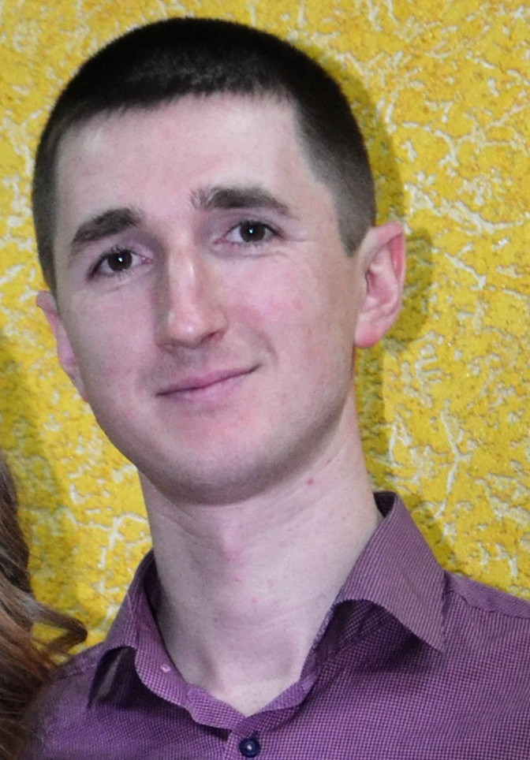

Русский
Русский
Poberezhnyuk Dmitriy

Age: 29 years.
Telephone: 068-17-99-459
Facebook
Email: dimasss.niko@gmail.com
Family status: married (with 1 child).
Education
2011-2013:
Admiral Makarov National University of Shipbuilding. Specialized computer systems. Specialist.
2007-2011:
Mykolaiv V.O.Sukhomlynskyi National University. Computer engineering. Bachelor.
Experience
2019 - Now:
Klymchuk and Co "Lombard "Capital"
Position: HR-manager.
Main responsibilities:
- training and adaptation of new employees;
- control of employees' work;
- development of training materials.
2013-2019:
Klymchuk and Co "Lombard "Capital"
Position: expert valuer.
Main responsibilities:
- work with clients, property appraisal;
- drafting contracts with clients;
- work with cash documents;
- sale of company services;
- debt control.
2010-2011:
Mykolaiv V.O.Sukhomlynskyi National University.
Position: laboratory assistant of the department.
Main responsibilities:
- maintaining the smooth operation of the equipment of the department.
Reason for dismissal: termination of the employment contract.
Additional information
Personal qualities: responsibility, resistance to stress,
sociability, patience, adequacy, punctuality.
Experienced PC user (MS Office, 1C, iSpring Suite).
Languages: Russian, Ukrainian, English (Intermediate), French (Elementary).
Driving license cat.B.